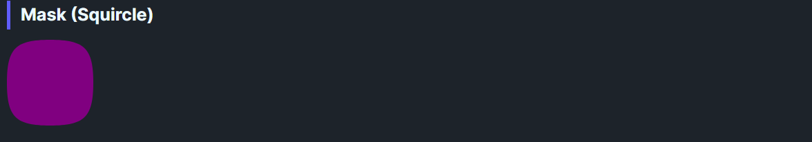

DaisyMask clips its content to preset shapes: squircle, heart, hexagon, circle, square, diamond, or triangle. It scales vector paths to the control's bounds on arrange, making it easy to mask images or backgrounds into decorative silhouettes.
| Variant | Description |
|---|---|
| Squircle (default) | Soft superellipse corners; balanced for avatars/cards. |
| Circle | Full ellipse. |
| Square | Hard edges. |
| Heart | Heart silhouette. |
| Hexagon | Six-sided mask. |
| Diamond | 45° rotated square. |
| Triangle | Equilateral triangle. |
<!-- Squircle mask -->
<controls:DaisyMask Variant="Squircle" Width="100" Height="100">
<Image Source="ms-appx:///Flowery.Uno.Gallery/Assets/logo.png" Stretch="UniformToFill" />
</controls:DaisyMask>
<!-- Hexagon badge -->
<controls:DaisyMask Variant="Hexagon" Width="120" Height="120" Background="{ThemeResource DaisyPrimaryBrush}">
<TextBlock Text="Hex" Foreground="White" HorizontalAlignment="Center" VerticalAlignment="Center" />
</controls:DaisyMask>
<!-- Heart photo -->
<controls:DaisyMask Variant="Heart" Width="140" Height="140">
<Image Source="ms-appx:///Flowery.Uno.Gallery/Assets/photo.jpg" Stretch="UniformToFill" />
</controls:DaisyMask>Width/Height for predictable aspect ratios; masks scale the 100×100 path to fit bounds.Stretch="UniformToFill" on images to avoid blank areas when clipped.BorderBrush/BorderThickness to outline the shape; ClipToBounds=True is set by default.